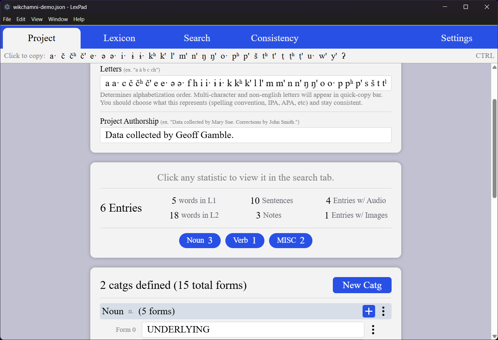
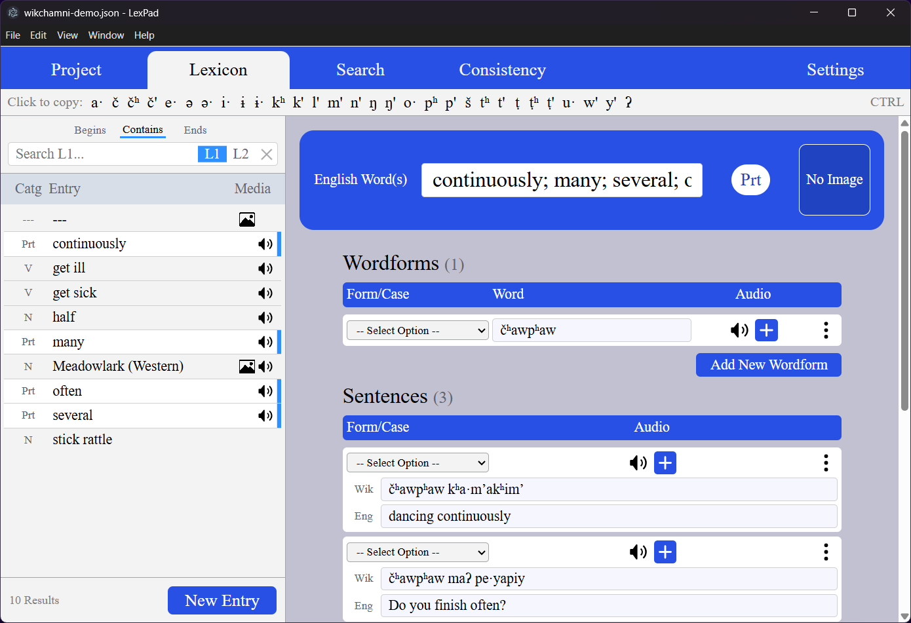
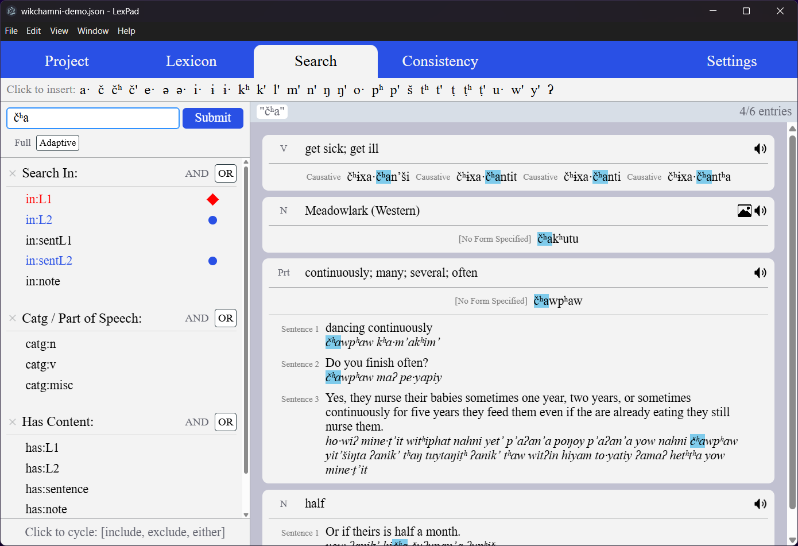
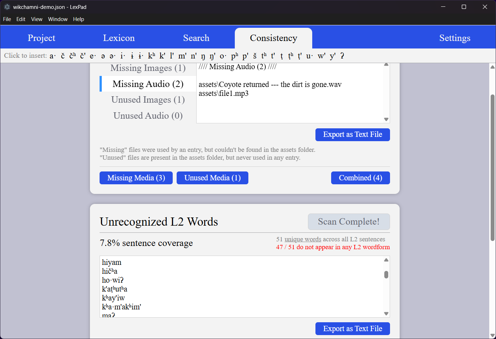

LexPad Basics
This section provides a quick overview of the software and its main featuers. For more details, look through the documentation (documentation page is still under construction).
Alternatively, the Getting Started page will walk you through installing LexPad and creating your first project. It also contains downloadable sample projects to help you get a feel for what a lexicon looks like.
The Project Tab
Enter basic info about your language, including its alphabet. Type it here once, and it will be accessible everywhere, directly from the interface. No need for alt codes or excessive copy-pasting.
Statistics about your project are shown in this section. Any statistic can be clicked to jump to a relevant search in the Advanced Search Tab.
Document catgs and wordforms in your language. A "wordform" can represent any derived form (exactly what is up to you). In Wikchamni, wordforms might demonstrate grammatical cases, while in Spanish they might demonstrate verb conjugations.

The Lexicon Tab
The lexicon features a live search in L1 or L2 that filters results as you type, with icons that let you see what each entry contains at a glance.
LexPad has built-in media support. If you attach an image, you'll see it right away. If you attach audio files, you can play them immediately with the press of a button.
Data is organized into 3 sections: wordforms, example sentences, and notes. The Consistency Tab contains a script that helps you check for L2 words that appear in sentences but were never recorded as a wordform.

The Advanced Search Tab
The advanced search gives you fine-grained control over what kinds of entries to search and which datafields to search in.
Use filters to search by catg, or include/exclude entries with certain attachments. This can, for example, allow you to search for "all verbs ending in '-ing' that don't have audio attached".
Once a search is submitted, you can click any search result to jump directly to the corresponding entry in the Lexicon Tab.

The Consistency Tab
LexPad uses automated scripts to flag inconsistencies in your database, which can help you catch and correct errors. Each script's output can be exported into a text file for review and documentation.
- The media usage checker looks for missing or unused media. See which files haven't been attached to an entry yet, or which files may have been accidentally moved.
- The sentence checker looks for L2 words that show up in a sentence, but were never recorded as a wordform. This can be helpful for catching typos, or flagging data that has yet to be added to an entry. (Proper names, frozen phrases, and anything else you don't necessarily want to add to the lexicon can be excluded from this checker by entering them into the ignorelist.)
